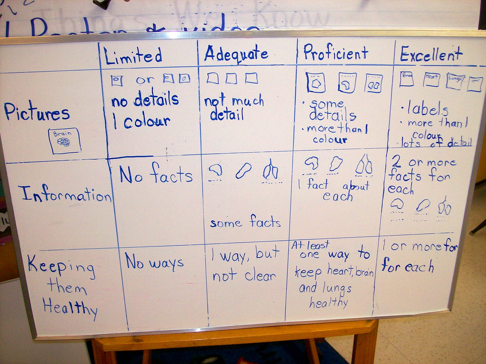

Evaluación en ABP.
Una evaluación alternativa para una enseñanza alternativa
Dice Miguel Ángel Santos Guerra, en su libro Una flecha en la diana: la evaluación como aprendizaje (ver artículo resumen): "La evaluación es un fenómeno educativo que condiciona todo el proceso de enseñanza y aprendizaje. No se trata de un fenómeno esencialmente técnico sino de un fenómeno ético. Por consiguiente, resulta indispensable preguntarse a quién beneficia cuando se hace y a quién perjudica; a qué valores sirve y qué valores destruye. La evaluación puede servir para muchas finalidades. Lo importante es utilizarla como aprendizaje, como un modo de comprender para mejorar las prácticas que aborda."
Las pregunta es "para qué" evaluamos, ¿qué beneficios perseguimos? No tiene mucho sentido evaluar por evaluar, porque "toca hacerlo". Tiene menos lógica aún y ninguna ética evaluar para jerarquizar, clasificar, atemorizar, perseguir y castigar. Una de las finalidades que debe tener la evaluación es la de perseguir el aprendizaje de evaluados y evaluadores. Por ello, necesitamos unas dinámicas de evaluación que vayan más allá de la mera comprobación de que el alumno ha memorizado unos contenidos.
Enseñanza y evaluación son las dos caras de una misma moneda. Entre ambas debe haber una correlación absoluta: nuestra manera de enseñar debe determinar nuestra manera de evaluar porque, de manera inevitable, nuestra manera de evaluar condiciona la manera de aprender de nuestros estudiantes.
Por ello, si nuestro estilo de enseñanza está cerca de la "instrucción directa" que describiremos en el primer módulo y nuestro estilo de evaluación consiste en un examen escrito en el cual solicitamos de nuestros estudiantes que reproduzcan el contenido que nosotros expusimos en la fase de presentación, el mensaje en relación con el estilo de aprendizaje de nuestros estudiantes es bien claro: es necesario memorizar los contenidos y ninguna otra competencia (en inglés podríamos hablar de 21st Century Skills) es necesaria.

Imagen: ccarlstead con licencia CC by 2.0
Si, por el contrario, tenemos intención de valorar cómo se aprende y qué se aprende durante el desarrollo de nuestro proyecto y al final del mismo, así como la calidad del producto final y otros aspectos que encontremos relevantes (relaciones entre los estudiantes, relaciones dentro del grupo, cambio actitudinal, etc.), entonces tenemos necesidad de buscar mecanismos de evaluación alternativos más allá de las herramientas convencionales: estamos hablando de una evaluación alternativa para una enseñanza alternativa.
¿Para qué evaluamos?
En primer lugar, porque existe la necesidad de regular el aprendizaje, es decir, de detectar las posibles dificultades que puedan encontrar los estudiantes en su aprendizaje para, a partir de ahí, ayudarles a resolverlas; en segundo lugar, la obligación de informar a estudiantes y familias sobre los resultados de su aprendizaje y su avance a lo largo del curso.
Hablaremos de evaluación cuando hagamos referencia al procedimiento de análisis del aprendizaje para su regulación por parte del profesorado y de los propios estudiantes.
En cambio, usaremos el término calificación para referirnos al procedimiento de cuantificación y comunicación de los resultados del aprendizaje y su evolución a los estudiantes y sus familias.
Limitar la función evaluadora a la calificación sin implicaciones en la regulación del aprendizaje reduce, por tanto, la fuerza de la evaluación a un acto administrativo pero de importantes consecuencias. Por el contrario, una evaluación de la cual se deriven planes de mejora sí es realmente educativa y el Aprendizaje basado en Proyectos nos permite hacer de la evaluación no una tarea fastidiosa y frustrante sino una manera de valorar cómo podemos aprender más y mejor a través de nuestros proyectos.
La evaluación en el ABP
NOTA: El visionado del vídeo es obligatorio puesto que pueden aparecer preguntas sobre contenidos desarrollados en él en el cuestionario.
El diario de aprendizaje
El diario de aprendizaje constituye una herramienta para la reflexión y análisis del pensamiento reflexivo. En el diario se puede recoger lo que sucede en el aula desde el punto de vista de quién escribe, anotando en él una descripción de lo que ocurre, así como sus interpretaciones e impresiones, lo cual posibilitará sacar más adelante conclusiones acerca de las razones del comportamiento. Esto posibilita el abandono de conductas robotizadas y rutinarias, permitiendo la reflexión y potenciando la capacidad de generar un conocimiento profesional crítico. Además constituye una guía para la reflexión sobre la práctica, favoreciendo la toma de conciencia sobre el propio proceso de aprendizaje.
En el interesante artículo El diario como estrategia didáctica se citan algunos de los principales valores que encuentran en la utilización del diario como estrategia de formación:
- Es activo y personal.
- Implica una reflexión sobre lo narrado y sobre la conducta profesional.
- Requiere una estructuración deliberada de su significado relacionando la información obtenida con la ya experimentada con anterioridad.
- Es multirrepresentacional e imaginativo y favorece la organización de la experiencia vivida en la formación.
- Facilita la reconstrucción del proceso seguido, con lo que se obtiene información sobre la evolución del pensamiento del profesor.
- Permite la obtención de autoinformación reforzadora e informativa.
- Favorece la estructuración, síntesis y análisis de la información.
- Fomenta el autoanálisis.
- Facilita la inclusión de la acción en los comentarios del profesorado.
- Produce un filtraje cognitivo de la conducta y un alejamiento respecto a ella.
- Permite detectar problemas y explicitar las concepciones personales.
- Posibilita el cambio de concepciones.
- Facilita la transformación de la práctica.
A la hora de poner en práctica un diario de aprendizaje la herramienta fundamental es el blog. Numerosas plataformas ofrecen la creación y gestión gratuita de blogs, las más conocidas son Blogger.com y Wordpress.com.
El diario de aprendizaje siempre debe servir como reflexión del alumnado sobre su propio aprendizaje. Puede proporcionarse una plantilla (mira estos ejemplos: La guerra una y otra vez, Mi diario de aprendizaje ) o dejarlo más abierto según vayan aprendiendo como usarlo.
Rúbricas
Con total seguridad, cuando tú realizas cualquier actividad te gusta saber a priori cómo establecer si has tenido éxito o no. Todos, de manera explícita o no, manejamos criterios de evaluación cuando realizamos cualquier actividad.
Imagina ahora una tarea que quieras que realicen tus estudiantes. Esta tarea supone un proceso de trabajo y conlleva la obtención de un producto. Si estableces las categorías que determinan el éxito del proceso y del producto, si ordenas los posibles grados de éxito y redactas unos enunciados que describan esos grados de éxito, entonces ya has hecho la rúbrica para evaluar la tarea.

Definición y uso
Una rúbrica, o matriz de evaluación, es una selección de aquellos aspectos que se quieran evaluar a lo largo de un proceso de aprendizaje junto a descriptores ordenados por niveles de ejecución o calidad para cada uno de los aspectos a evaluar.
En la siguiente tabla puedes encontrar una propuesta de rúbrica diseñada por Diego Ojeda para el diseño de tareas de enseñanza-aprendizaje y que podríamos utilizar tanto durante la fase de diseño como tras su implementación en el aula - y los evaluadores podríamos ser nosotros mismos ¡o incluso los propios estudiantes!
Rúbrica para el diseño de tareas. Diseño de Fernando Trujillo
Portafolio o portfolio
El portafolios es tanto una estrategia como un instrumento de evaluación. Por un lado, el portafolios es una estrategia de evaluación que pretende recoger el material elaborado a lo largo del desarrollo del proyecto. Por otro lado, el portafolios es un instrumento de evaluación que mantiene y gestiona el estudiante y que comparte con el docente para su evaluación.
El portafolios es una herramienta flexible de evaluación que nos permite recoger evidencias y reflexiones sobre el proceso de aprendizaje. En este sentido es un instrumento global que puede contener rúbricas, contratos de aprendizaje, elementos del diario de aprendizaje y demás herramientas de evaluación así como las evidencias que se acuerden con los estudiantes sobre su aprendizaje y el proceso de trabajo.

Metodologías activas, didáctica y evaluación por varios autores bajo licencia Creative Commons Reconocimiento-NoComercial-CompartirIgual 4.0 Internacional License.